最新公告
本支队已完成前期文献综述，即将开启实地考察。我们将深入调研两地电网互联机制，探索碳中和背景下的新型电力系统建设。
实践简介
实践目标
探索大湾区在迈向“双碳”目标过程中的电力技术路径，特别是深港两地在电网互联、可再生能源并网及电力交易机制上的差异与互补。
成员介绍
源梦双碳·点亮深港实践支队由来自电机系、未央书院、自强书院的16名师生组成，我们将怀揣梦想，用足迹丈量大湾区电网的脉络。
🚩 领队与指导
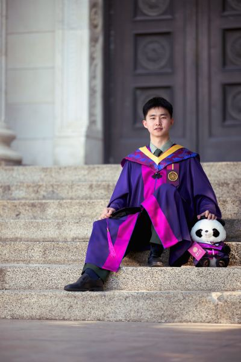
项梓纭
带队辅导员
大家好，我叫项梓纭，来自电机系电硕52班。很荣幸担任本次实践的带队辅导员，希望在接下来的几天里跟大家一起圆满完成本次实践活动，也希望大家在本次实践中都能有所收获！
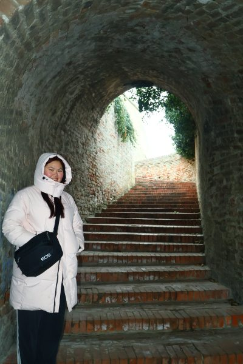
王婧贤
支队长
大家好，我是本次实践的支队长王婧贤。非常荣幸能够带队前往深圳和香港进行调研学习，希望能给大家带来一次满意的实践体验！
⚡ 调研组

梁锦鹏
调研副支队长
大家好！我是来自电35的梁锦鹏，非常高兴能够和大家同行实践，期待和大家一同增长见闻、开拓视野，谢谢～
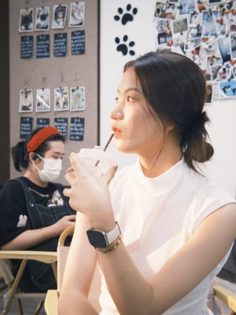
郑霁恒
我是来自电45的郑霁恒，在本次实践中担任调研工作～我喜欢电影、音乐，也有（正在开发🤔）微量二次元属性，期待与大家同行！😉
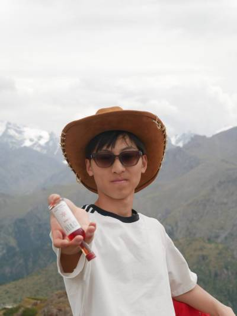
陈柏源
来自电45，山东烟台人，喜欢和大家一起实践长见识~
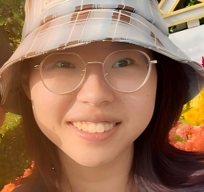
闫晓雨
我是来自电机系电32班的闫晓雨，喜欢美食，在这次实践中担任调研组的工作，这是我第一次去广东和香港，衷心期待这次美好的旅程，希望能和大家相处愉快！
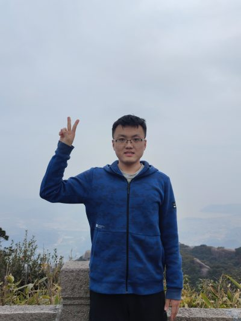
徐天瑞
大家好！我是调研组的徐天瑞，来自电2年级。香江探绿能，港岛践知行，期待可以和大家一起，在大湾区吃好玩好，把我们的实践故事写好讲好！
📷 宣传组
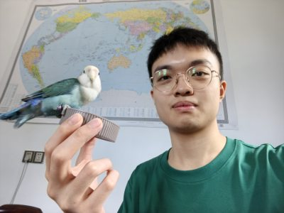
陈泊熹
宣传副支队长
大家好，我是电35班的陈泊熹，来自福建泉州，很荣幸成为“点亮深港”支队的宣传副支队长。喜欢摄影锻炼听歌唱歌喝茶睡觉。轻至中度社恐，有时候很P的INFJ，希望能在实践中和大家成为好朋友，也欢迎大家多多督促我干活（
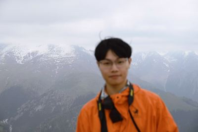
邱恒骏
大家好，我是宣传组的邱恒骏。我喜欢听歌、唱歌、摄影、跑步。希望能在本次实践收获友谊和更多来自业界和学界对电力的认识～（主线是帮大家都拍出美美的照片）
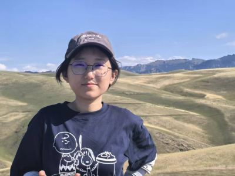
尚天怡
大家好，我是来自未央-电41的尚天怡，平时喜欢听音乐、弹钢琴。很荣幸成为实践团队的一员，希望和大家在实践中互帮互学，一起解锁新收获！
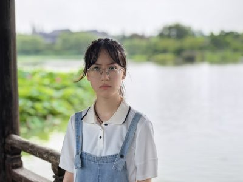
王沐泽
大家好！我是来自未央51的王沐泽，一名有点i的e人，希望可以在这次事件中认识新朋友，和大家共度快乐时光～
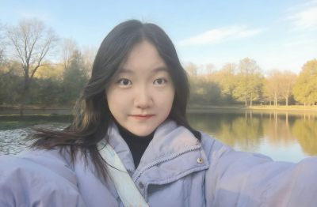
聂凝钰
我是自强54班的聂凝钰，超爱吃辣and总以探索美食为旅行第一目的的半i半e人一枚（？），酷爱台球、小说以及every新鲜事物！非常期待在陌生的地方和陌生的人成为朋友呀！
🤝 内外联组
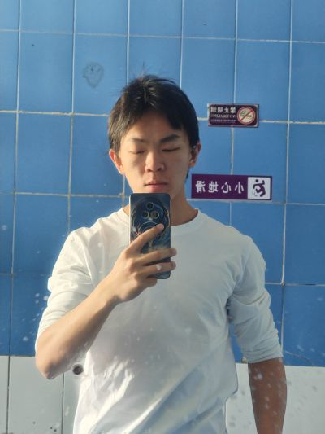
钟瑞
联络副支队长
很高兴能参加此次先导实践~希望学有所长，收获知识、友谊、青春！
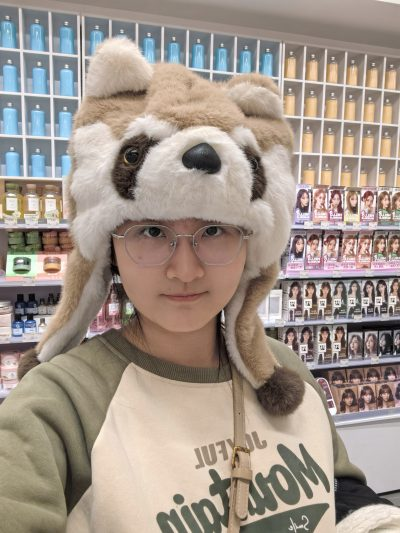
蔡佳馨
大家好，我是来自内蒙古的蔡佳馨，在品鉴羊肉和面食上颇有造诣（）平时喜欢打游戏、逛街和搞抽象，致力于老梗的复习与新梗的创作，欢迎大家找我玩！非常高兴能和大家一起去香港实践！！
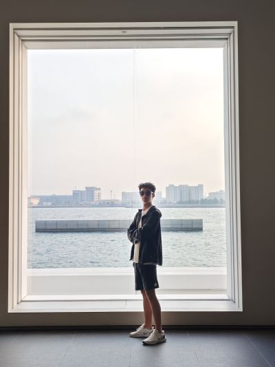
刘羽辰
大家好，我是电45的刘羽辰。平常喜欢听音乐、看电影。希望能和大家一起经历愉快的实践活动，留下美好的回忆！
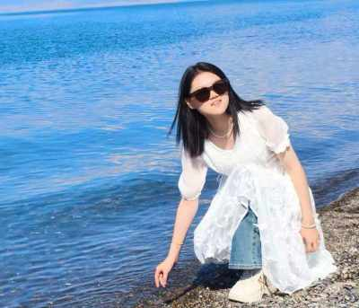
甘甜甜
大家好！我是来自未央53班的甘甜甜，很高兴能与大家一起前往深圳和香港实践。小i人一枚，比较慢热，不过热起来之后还是十分滚烫滴。期待与大家的见面！
推送合集

影像合集
📷 影像占位
📷 影像占位